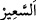
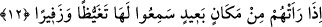
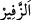

içindir. “
” alevli bir şekilde yanan büyük ateş demektir. Hakikat ehlinden bazıları
âhiretteki bu alevi şiddetli büyük ateşin dünya ateşiyle alevlendirildiğini söylemiştir.
Dünya ateşi ise kulun dünyaya ve lezzetlerine aşırı düşkünlük, hırs göstermesidir.
12. Cehennem ateşi uzak bir mesafeden kendilerini görünce, onun öfkelenişini
(müthiş kaynamasını) ve uğultusunu işitirler.
“Cehennem ateşi” alevli ateş cehennem ehlinin görüş alanına girip karşı karşıya
geldiklerinde... Burada melzûm zikredilip lâzım kasdedilmiştir. Görmeden bahsedilmiş
fakat ateşin görülebilir olduğu kasdedilmiştir. Melzûmdan lâzıma geçiş ve intikal
mecazdır.
Görülmesi mümkün olan en “uzak bir mesafeden kendilerini görünce,” Bazıları bu
mesafenin doğudan batıya doğru beş yüz yıl olduğunu söylemişlerdir. Dolayısıyla
burada ateşle cehennemlikler arasındaki mesafenin, ateşi gördükleri esnada
alışılagelmiş uzaklık sınırının ötesinde bir uzaklık olduğuna işâret vardır.
“Onun öfkelenişini (müthiş kaynamasını) ve uğultusunu işitirler.” Alevli ateşin
kaynama sesi öfkeden göğsü kabardığında göğsü ses çıkaran kızgın bir kimsenin sesine
benzetilmiştir.
Şeyhzâde der ki: “Kralın öfkelendiğini gösteren bir şey görüldüğünde “Kralın
öfkesini görmedin mi?” denir. Burada da aynı şekildedir. Aslında işitilen kızgınlıktan
daha şiddetli olan öfke değil, bilakis öfkeye delâlet eden sestir.”
el-Müfredât’ta der ki: “
” öfkeyi ortaya çıkarmaktır. Gayz ise gadabdan daha
şiddetli kızgınlık demektir. Gayz bazen işitilen bir sesle birlikte olabilir. Gadap ise
kişinin kalbinde kanın hızlı dolaşmasından dolayı hissettiği harâret, sıcaklıktır. “
”
ise karın boşluğundan işitilen ses demektir. Aslında kaburga kemiği şişinceye kadar
nefes alıp vermektir.
Ubeyd b. Umeyr der ki: “Cehennem öyle bir kükrer ki bütün peygamber ve mukarreb
melekler yüzüstü yere düşüp göğüsleri çatırdar. Hatta İbrahim (a.s.) dizleri üzerine
çökerek “Ey Rabbim! Ey Rabbim! Senden ancak nefsimi diliyorum.” diye duâ eder.”
Ehl-i sünnet hayat için bünyenin şart olmadığını, Allah Teâlâ’nın mahiyet olarak
cehennemde hayat, akıl, görme ve konuşma kabiliyeti yaratmasının mümkün olduğunu
söylemişlerdir. Fakîr (Bursevî) der ki: Doğru olan budur. Nitekim “Şüphesiz ki âhiret
yurdu, işte gerçek hayat odur.” (el-Ankebût, 29/64) âyeti de buna delâlet etmektedir.
Dolayısıyla buna benzer durumları te’vîl etmeye ihtiyaç yoktur.